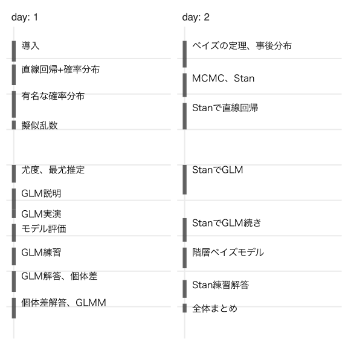

統計モデリング概論 DSHC 2024
- 講師: 岩嵜航 (東北大学生命科学研究科)
- 日程: 2024-08-21&28 09:30–17:30
- 場所: zoom.us

実行環境の準備
DSHC 2024 参加者は
Google Colab さえ利用できればOK。
下記の演習資料のリンクから
preparation.ipynb が実行できることを確認しておくとなお安心。
手元のmacOSに講義用の仮想環境を用意する一例 (Colabに合わせて 3.10 を指定してあるが、最新版 ≥3.12 でも大丈夫なはず):
brew install pyenv
env PYTHON_CONFIGURE_OPTS="--enable-shared" pyenv install 3.10
# Rscript -e 'reticulate::install_python("3.10:latest")'
$(pyenv prefix 3.10)/bin/python3 -m venv ~/.virtualenvs/dshc2024
source ~/.virtualenvs/dshc2024/bin/activate
pip3 install -U setuptools pip
pip3 install -U jupyter seaborn statsmodels cmdstanpy arviz
jupyter-notebook preparation.ipynb
演習資料
- Colab用ipynbリンク: https://drive.google.com/drive/folders/11-Rk-F2ZD0ZlCZlI9HKjz39H4KrZh9vP?usp=sharing
- ローカル環境向け・予備 (中身は上のと同じ)
講義資料
リンク先では←→キーで戻る・進む。
- 2024-08-21 09:30 | 導入
- 2024-08-21 10:30 | 直線回帰、確率分布、擬似乱数生成
- 2024-08-21 13:00 | 尤度、最尤推定
- 2024-08-21 14:00 | 一般化線形モデル(GLM)
- 2024-08-21 16:00 | 個体差、一般化線形混合モデル(GLMM)
- 2024-08-28 09:30 | ベイズの定理、事後分布、MCMC
- 2024-08-28 13:00 | StanでGLM
- 2024-08-28 15:00 | 階層ベイズモデル(HBM)